E-Lab Notebooks and Other Tools for Project Management
Vicky Steeves and Nick Wolf | September 20, 2016

Benefits and Challenges to Managing and Documenting Project Workflow
- Enable group collaboration while tracking contributions and controlling access
- Keep track of master copies of files as well as versions and backups
- Gather bird's eye views of resource allocation and time usage
- Allow for simultaneous preparation for data publishing and preservation
What to Look for in E-Lab Notebooks and Workflow Tool Benches
- Web-hosted vs. Self-Host vs. Desktop Environments
- Grant and Project Management Tools vs. File and Research Management vs. Experiment/"Research Process" Management
- Cost/License Products vs. Closed-Source Free Options vs. Open Source/Open Access
What to Look for in E-Lab Notebooks and Workflow Tool Benches
Whatever option you choose...
...beware of lab notebooks and tools that do not allow you to export your data!
If this software/tool provider disappears, you need to maintain access to your data.
Some Free/Low-Cost Examples
- Labguru (free for single user, cost for group)
- Bioraft (institutional/departmental setup, cost for setup)
- eLabFTW (free and open source, deploy on user server)
- MyLabBook (in development, Drupal-based open-source local deployment)
- REDCap (closed source, deploy on user server)
- Benchling (free for academic use, web-based platform)
Check out our LibGuide or consult this longer list of providers.
What is the Open Science Framework?

A free and open source project management tool that connects researchers to the tools they are already using to make management easier through the research cycle.
Why Use OSF?
- Preserve your current workflow, file types, and standard operating procedures
- Enhance those workflows by better documentation, sharing, and discovery of your research materials
- Gather together group permissions, various storage options, bibliographic management, and publication in one place
- OSF is the work of a non-profit, the Center for Open Science, dedicated to supporting open science using open-source tools
OSF Integrations with Research Tools
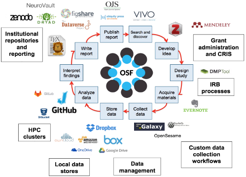Getting Started: OSF at NYU
Sign up at osf.io using your NetID and create your account.
Click on "Sign In" and at the bottom of the sign-in box, the link for "Login Through Your Institution."

Setting Up a Project
Go to https://osf.io or just click "My Projects" on the top bar.
Click "Create Project" and fill in the form. 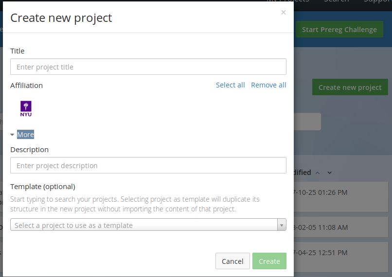
Don't Be Afraid of How Blank It Looks...
Let's Add Collaborators
Click "add" button next to the title of the page. 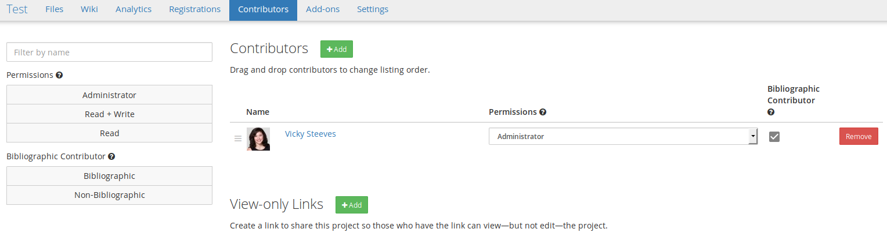
Search for the person to your right and add them.
Setting Up Addons
Try adding an account of your own by clicking on your profile, then "Settings," then "Configure Add-on Account." Click on "Connect Account" next to an addon.
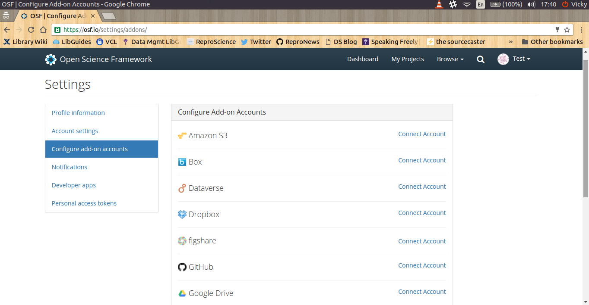Back to Your Project: Select Your Project Add-ons
Go to project "Settings," then "Select Add-ons" 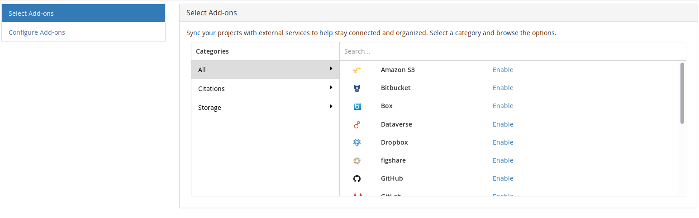
Adding Your Addons
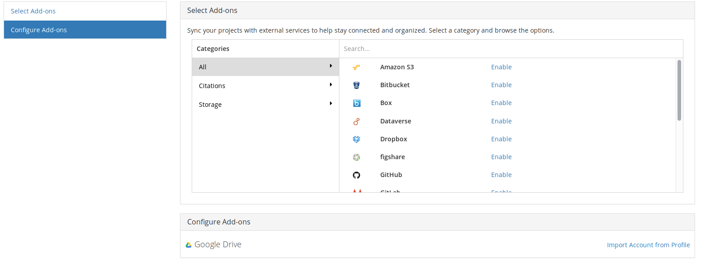
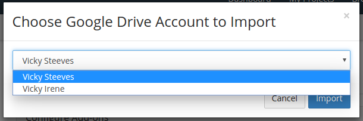
Authorizing Your Addons

Choose Your Folder
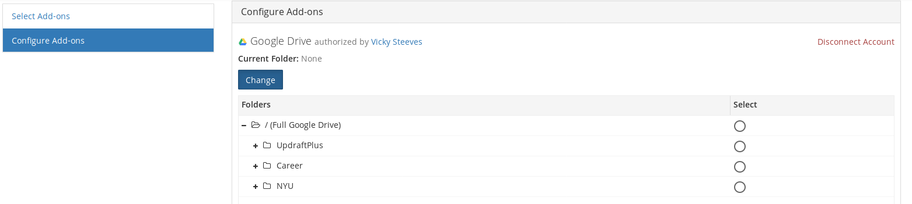Working with Your Files
Click on "Files" on Your Project Top Menu
From here, you can:
- See all files from OSF storage and any configured addons
- Drag and drop files into any kind of storage, OSF or otherwise
- Create folders in OSF storage for better organization
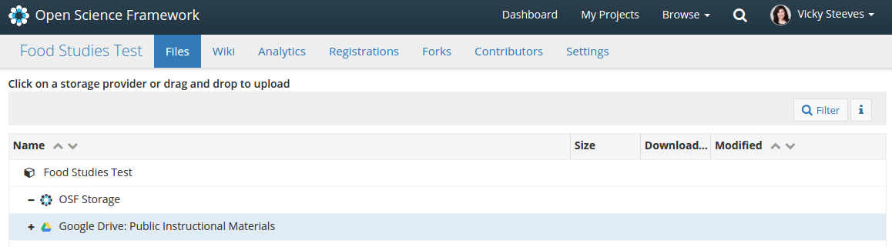
Tagging Files
When you click on a file in OSF, it renders right in-browser. On the bottom right is the "tag" field, where you can enter whatever you want.
Try adding 2 tags to your file and compare with the person to your right
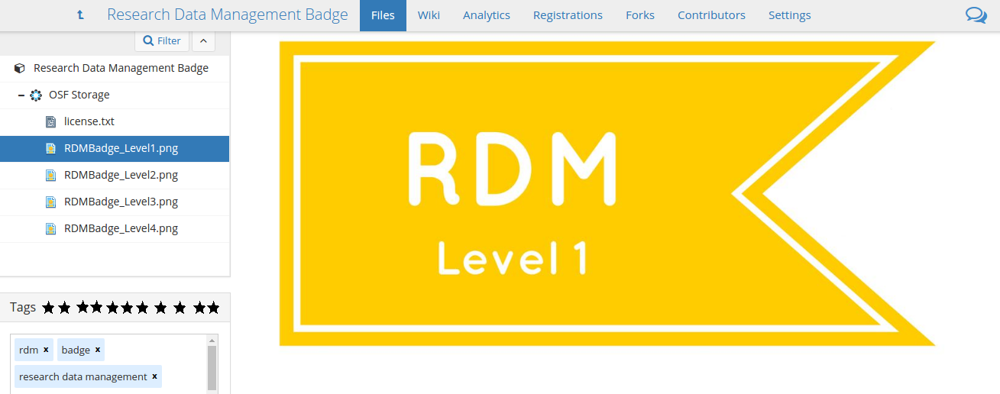Versioning Files
When you click on a file in OSF storage, you can also see and download all the versions of that file that have been uploaded.
THE CATCH: The file has to be uploaded with the same name!
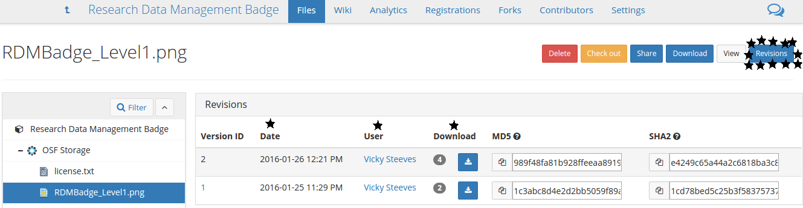Documenting with the Wiki
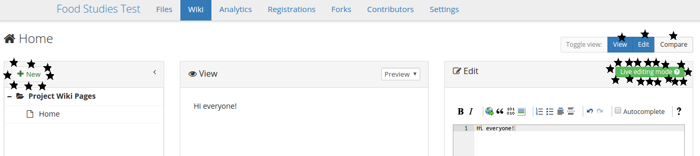This also has a robust versioning. And you can compare versions side-by-side.

Best Practices with the Wiki
Use the "Home" wiki page as a table of contents listing project goals, personnel, sub-components, and links to important files.
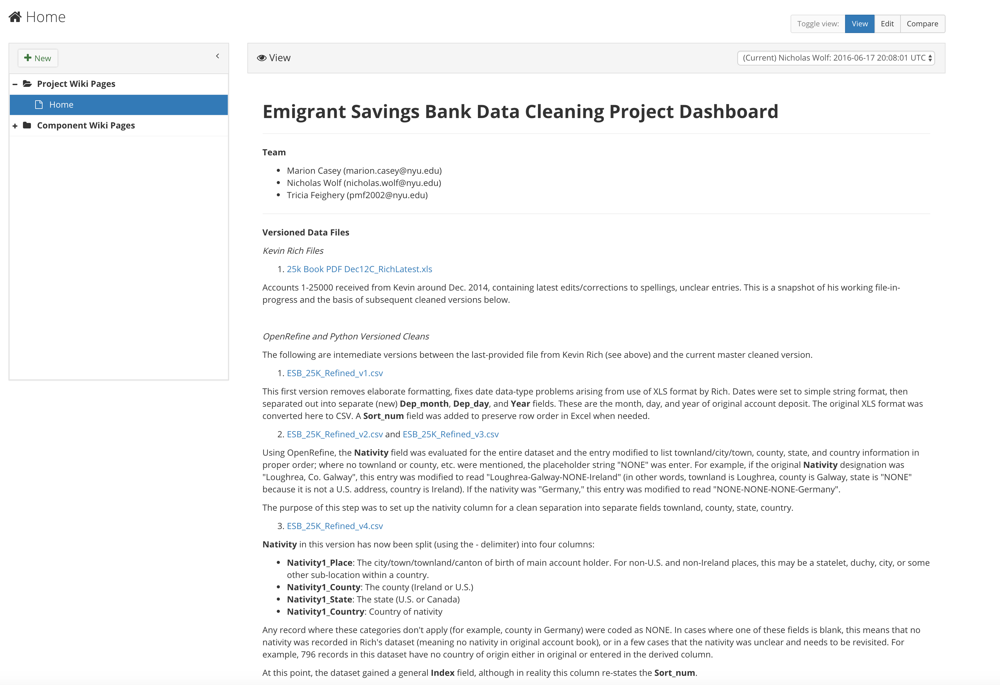Components
Components are essentially "sub-projects" that can have their own set of collaborators, add-ons, and access controls.
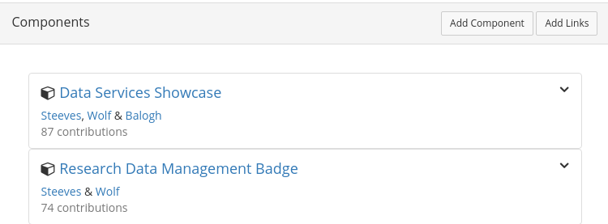Sharing
Everything (files, subcomponents, wiki docs) gets a short permalink in OSF.
That makes it easy to share via e-mail, Twitter, pastebins, etc.
You can also share projects via a view-only link, including an option to anonymize contributors for blind peer review.
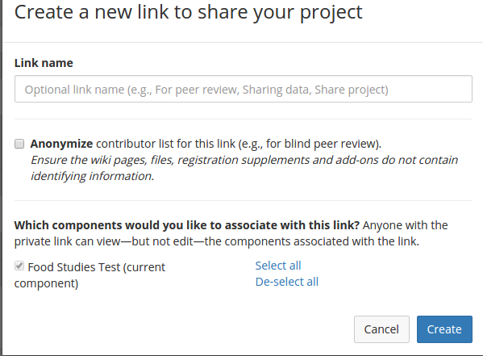Going Public
All OSF projects start private. We can make them public when we are ready and reap some benefits, like built-in analytics
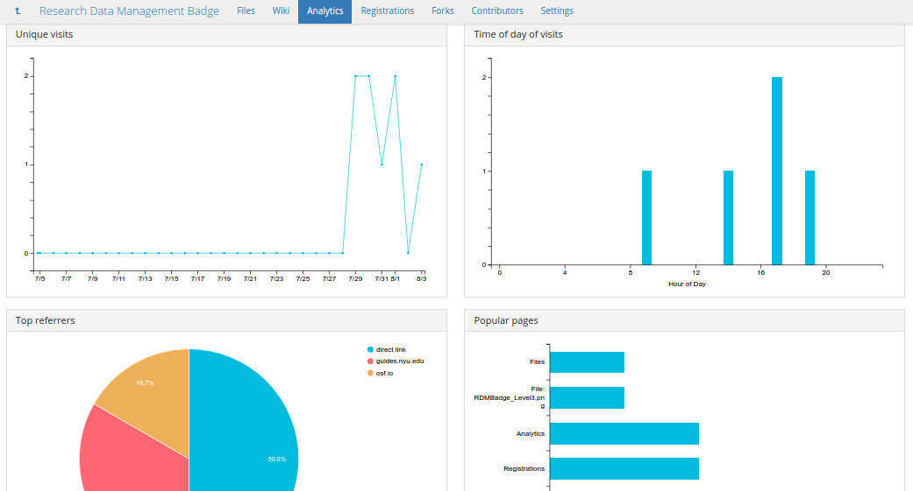Publishing
When you want to publish your final product, you register it. All the files are pulled into an archive on OSF storage, and the project becomes read-only.
You can get a DOI for this project, and include it in a "Supplementary Materials Section" of a journal article.
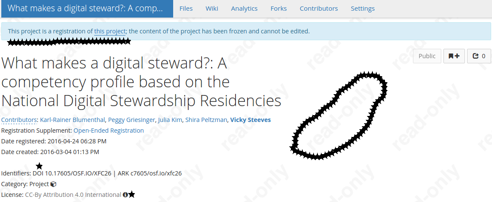What is Jupyter Notebook?

A web-based interface for writing, editing, and running programming scripts, including popular languages used by researchers like Python and R.
How Are Researchers Using Jupyter Notebook?
2010 US Census Data, by J. Bednar 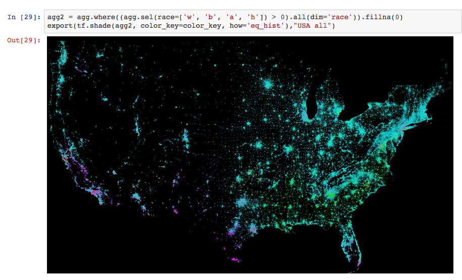Setting Up Jupyter Notebook on Your Desktop/Laptop
- DIY (for people who know Python well): install using pip
- Single nice package including Python, many key libraries for research: install using Anaconda
Features
- Write, edit, and then run your Python or R scripts right in a single window
- Document and organize your script files in one place
- Jupyter Notebooks works on javascript and html (=everything you need for web); embed and share notebooks on the web
- Create interactive widgets (sliders, filters, toggles) for dynamic visualizations of data
Preview 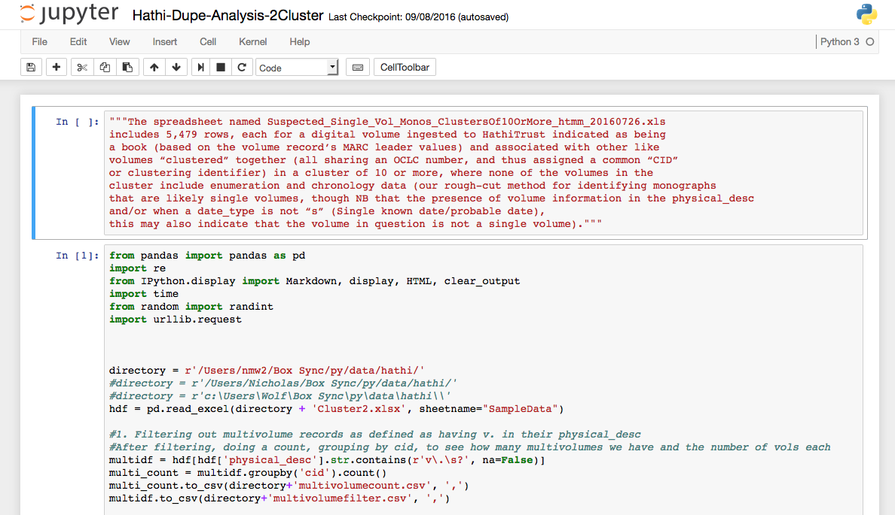
Thank you! Questions?
Email us: victoria.steeves@nyu.edu & nicholas.wolf@nyu.edu
Learn more about RDM: guides.nyu.edu/data_management
Get this presentation: guides.nyu.edu/data_management/resources
Make an appointment: guides.nyu.edu/appointment